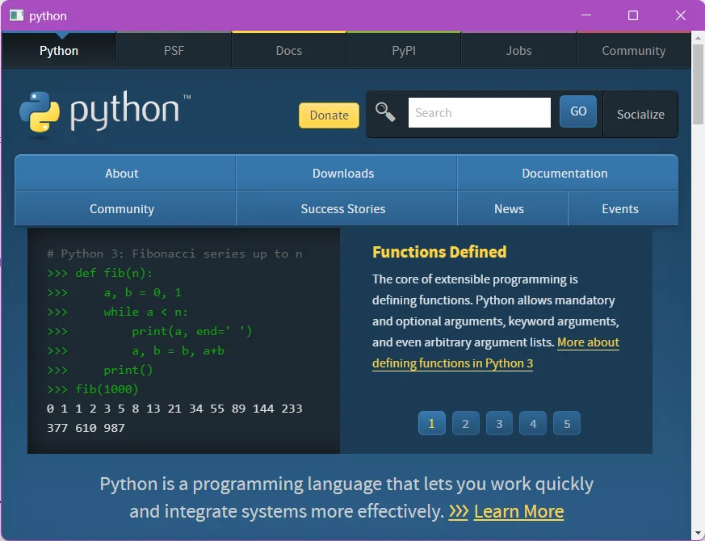
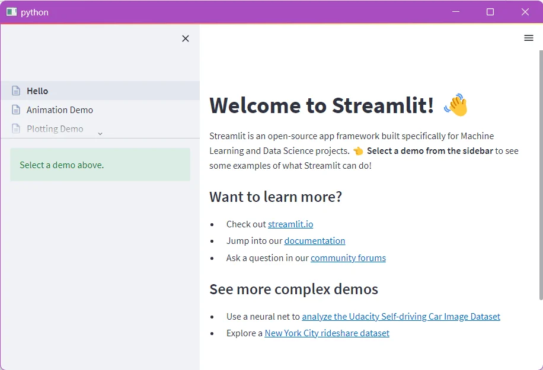

Streamlit + PySide = standalone data app
2022-10-07
For one of my projects I wanted to be able to open a streamlit app in its own window. Streamlit is an excellent way to turn scripts into web apps that I like to use to showcase research data. By default, it starts a web server and attempts to open this url in a webbrowser.
I was curious if it would be possible to redirect this to some sort of Python webview, so that I could turn my dashboard into a standalone app.
Qt webview
It turns out that Qt (using PySide2) has this capability via the QtWebEngineWidgets. The most straightforward way to install is via conda:
conda install -c conda-forge pyside2With pyside installed, it is straightforward enough to make a little window pop up showing any url:
from PySide2 import QtCore, QtWebEngineWidgets, QtWidgets
URL = 'https://python.org'
app = QtWidgets.QApplication()
view = QtWebEngineWidgets.QWebEngineView()
view.load(QtCore.QUrl(URL))
view.show()
app.exec_()This is what it looks like:
{kind=link}

Wrapping streamlit
To start a streamlit server (and closing it!) is a bit more involved. Normally you would run streamlit run my_script.py, and then pop the url into your webbrowser. But somehow we must wrap this behaviour. This is what I ended up with:
import atexit
import subprocess as sp
import os
from PySide2 import QtCore, QtWebEngineWidgets, QtWidgets
def kill_server(p):
if os.name == 'nt':
# p.kill is not adequate
sp.call(['taskkill', '/F', '/T', '/PID', str(p.pid)])
elif os.name == 'posix':
p.kill()
else:
pass
if __name__ == '__main__':
cmd = f'streamlit hello --server.headless=True'
p = sp.Popen(cmd.split(), stdout=sp.DEVNULL)
atexit.register(kill_server, p)
hostname = 'localhost'
port = 8501
app = QtWidgets.QApplication()
view = QtWebEngineWidgets.QWebEngineView()
view.load(QtCore.QUrl(f'https://{hostname}:{port}'))
view.show()
app.exec_()- In this example I use
streamlit hello. You can exchange this with the path to your script. - For the streamlit command, we need
--server.headless=True. This will prevent streamlit from trying to open the URL in your default browser. - I run the streamlit command in subprocess. This is to isolate the event loop. I tried going with threads, but using a subprocess is so much easier.
- Therefore, we must kill the streamlit server when we close the webview. To do so we can use the
atexithandler. On Linux we can usep.kill(), but on Windows we must send thetaskkillcommand. From experience,p.kill()is not adequate on Windows.
This is the end result:
{kind=link}

No browser required :-)